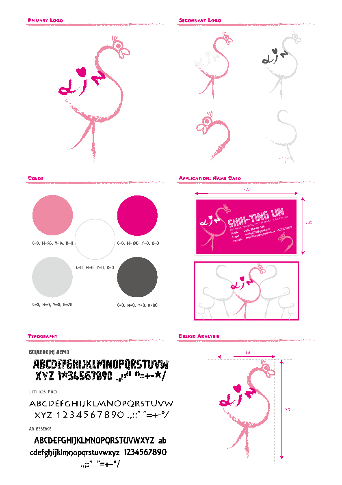
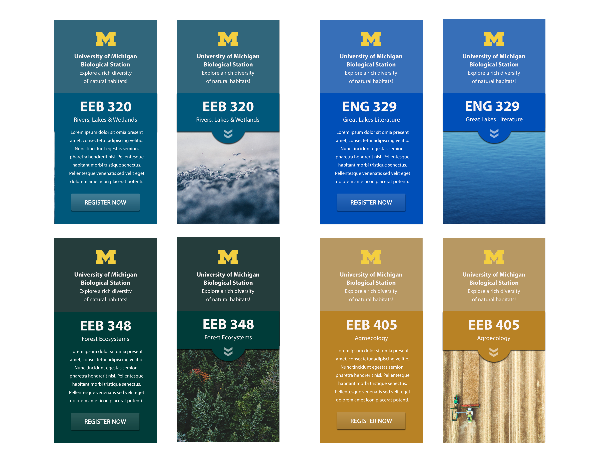
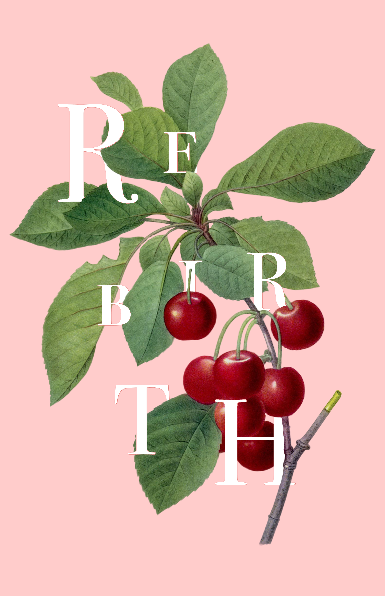
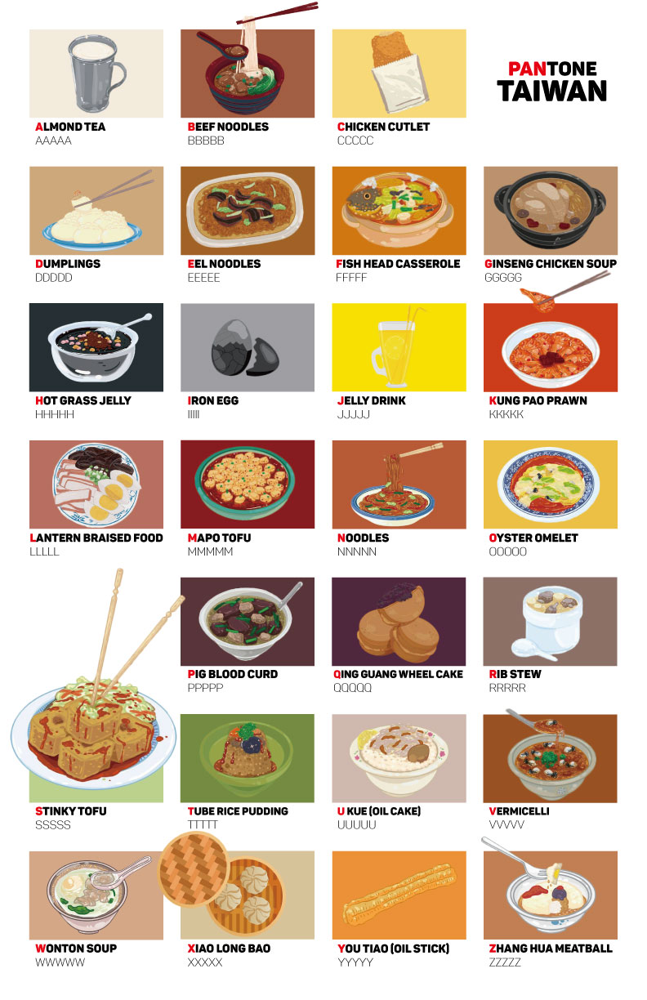
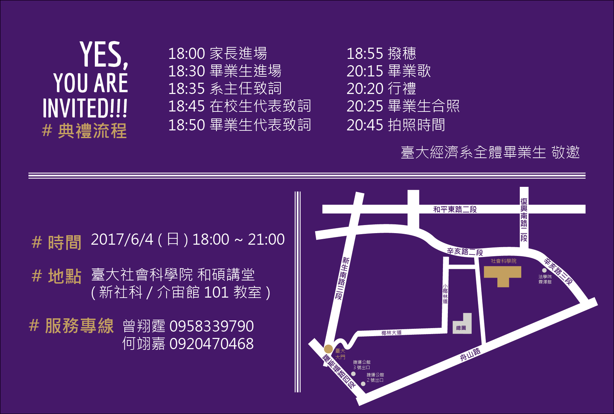
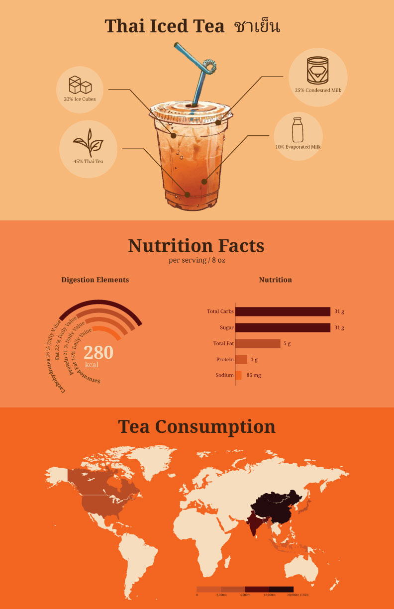
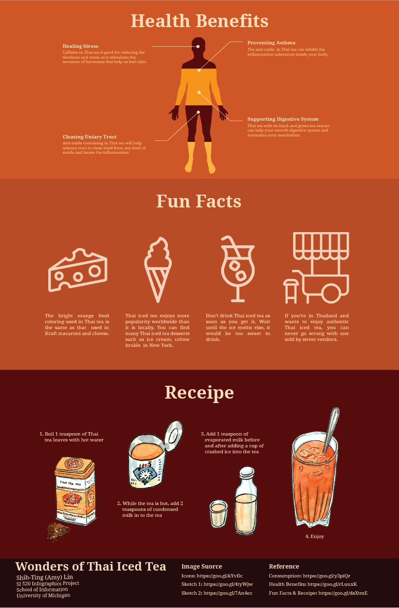

Play with Images
Side Projects and Design Practices
As a design enthusiast, design is my second name.
I design for fun, for change, and with simplicity.
Visual Identity Design
This is the design guide for my personal visual identity. The flamingo is a combination of my first name initials, which is S and T, in addition to my last name, Lin. The primary color I adopted for my design is pink of high saturation, which represents that I'm an energetic and passionate person.
Graphic Design

The web banners are designed for the 8 classes that are offered at the University of Michigan during Winter, 2018. The color harmony I adopted was double complimentary. With this color scheme, I was able to take care of the themes on both waters and the lands.
I like to experiment with different media. This is an illustration of cherry, whose symbolic meaning is rebirth. The pink background resembles the feeling of spring and hence adds to the atmosphere of rebirth.
Born and raised in Taiwan, it's the first time I have been away from home for so long. Affordable and delicious Taiwanese cuisine is one of the things I miss most in Taiwan. Hanging this poster in my room reminds me of my family in Taiwan and helps me go through the darkest hours before the dawn.
I was the Design Lead of department commencement during undergrad. The purple color used in the background symbolizes the color of the Social Science College, which my department belongs to. Four years of training in economics is intense, so "SURVIVE" again emphasizes the effort and the high sense of accomplishment of graduating from the department of economics.
Infographics
 I have fallen in love with Thailand the first time I visited it. During my time in Thailand, what surprised me the most is that Thai tea bought from street vendors is always good, despite different recipes.